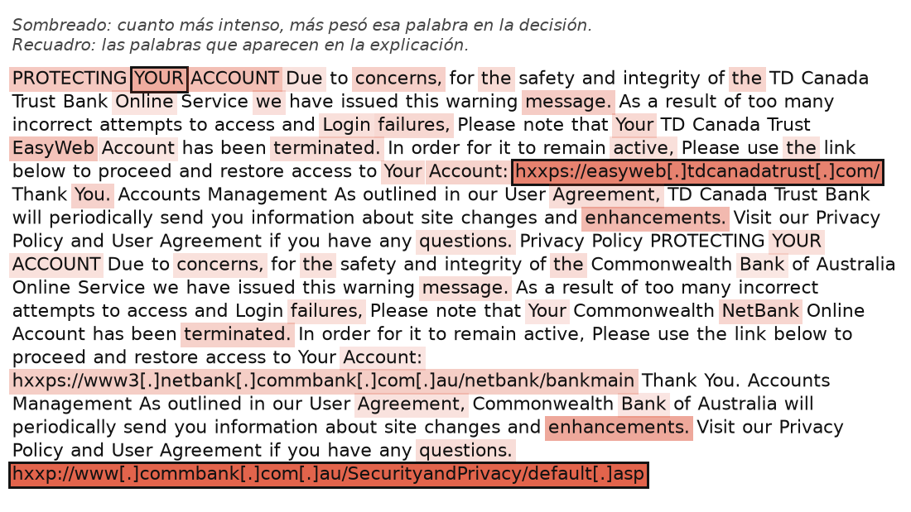
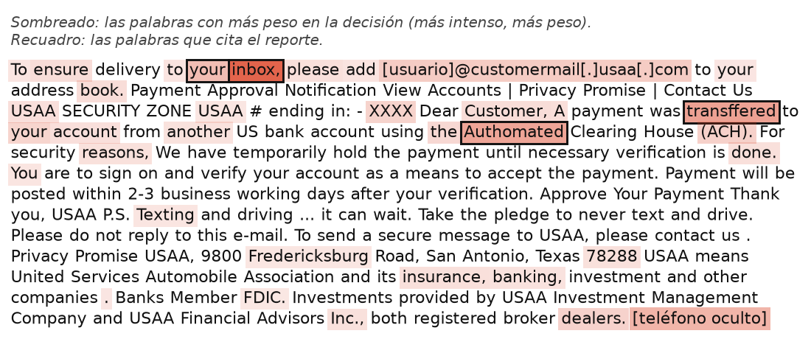
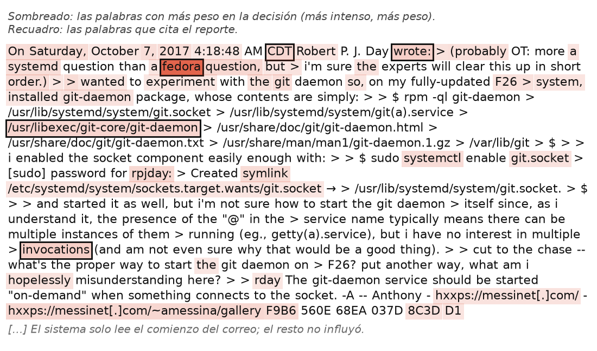
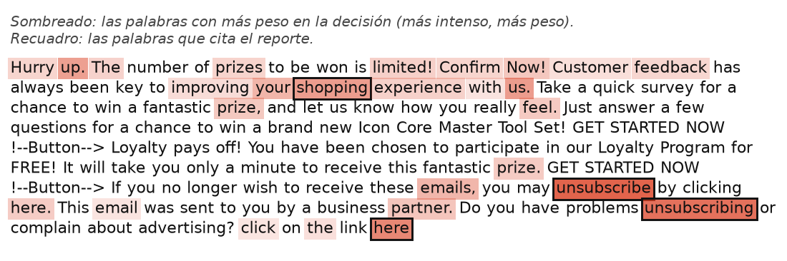
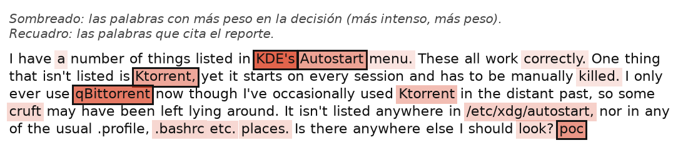

Este formulario es parte de una tesis de Ingeniería Informática (Cristhofer Alegre, PUCP). Construimos un sistema que detecta correos de phishing (correos que intentan engañarte) y que explica por qué tomó cada decisión. Queremos saber si esas explicaciones se entienden.
Verás un ejemplo resuelto y luego 4 correos, cada uno con su explicación. Por cada correo responderás 1 o 2 preguntas cortas y dirás si la explicación se entiende y si te sería útil; al final, dos cuestionarios de opinión. Toma unos 15 minutos.
No necesitas saber de seguridad ni entender todo el inglés de los correos: las preguntas se responden mirando la explicación. No te evaluamos a ti, sino a la explicación.
Es voluntario y anónimo. Los enlaces de los correos están desactivados; no intentes abrirlos.
Consultas: a20210577@pucp.edu.pe
Acepto participar de forma voluntaria y anónima, y sé que puedo dejar el formulario cuando quiera.
Estas preguntas solo sirven para describir al grupo de participantes.
P1. ¿Cuál es tu situación actual?
P2. ¿Cuál es tu carrera o área de formación?
P3. ¿Tienes formación o experiencia en ciberseguridad (cursos, trabajo en un centro de operaciones de seguridad, competencias tipo CTF)?
Cada explicación tiene tres partes:
1. La decisión: si el correo es phishing o legítimo, y qué tan seguro está el sistema (en %).
2. En qué se basó: qué partes del correo pesaron más, en orden. Casi siempre es el texto; a veces también el diseño del correo o sus enlaces.
3. La imagen del correo: las palabras más sombreadas son las que más pesaron.
Abajo tienes un ejemplo ya explicado. No se evalúa.
Asunto: monkey.org Password update
El correo original tiene formato HTML (diseño), con 2 enlaces; aquí se muestra solo su texto.

Decisión del sistema: PHISHING (intento de fraude), con 100.0% de confianza.
¿En qué se basó?
• Texto del correo: 100.0% del peso. Lo que más pesó:
1. «notifications»: 24.5%
2. «expires»: 23.5%
3. «myaccount»: 19.0%
4. el signo de puntuación «,»: 17.3%
5. la cifra «2022»: 15.8%
• Diseño del correo (HTML): no influyó en esta decisión.
• Enlaces y verificación del remitente: no influyó en esta decisión.
En este ejemplo, el sistema decidió que el correo es phishing, con 100.0% de confianza. Se basó casi solo en el texto: las palabras que más pesaron fueron «notifications», «expires» y «myaccount», que en la imagen aparecen con recuadro. El diseño del correo y sus enlaces no influyeron.
Ahora, 4 correos reales. Responde las preguntas según lo que dice la explicación, no según lo que tú opinas del correo. Al final de cada correo, marca de 1 (totalmente en desacuerdo) a 5 (totalmente de acuerdo) qué te pareció su explicación.
Asunto: USAA REQUEST YOUR APPROVAL FOR AN INCOMING ACCOUNT DEPOSIT
El correo original tiene formato HTML (diseño), con 12 imágenes y 11 enlaces; aquí se muestra solo su texto.

Decisión del sistema: PHISHING (intento de fraude), con 99.6% de confianza.
¿En qué se basó?
• Texto del correo: 100.0% del peso. Lo que más pesó:
1. «inbox»: 29.9%
2. «transffered»: 19.6%
3. «authomated»: 19.1%
4. la cifra «0514»: 16.4%
5. «your»: 15.0%
• Diseño del correo (HTML): no influyó en esta decisión.
• Enlaces y verificación del remitente: no influyó en esta decisión.
C1. Según la explicación, ¿qué palabra pesó más para decidir que este correo es phishing?
C2. Según la explicación, ¿qué parte del correo pesó más en esta decisión?
1 = totalmente en desacuerdo; 5 = totalmente de acuerdo.
| 1 | 2 | 3 | 4 | 5 | |
|---|---|---|---|---|---|
| E1. Entendí por qué el sistema tomó esta decisión. | ◯ | ◯ | ◯ | ◯ | ◯ |
| E2. Esta explicación me ayudaría a decidir si confiar en la decisión del sistema. | ◯ | ◯ | ◯ | ◯ | ◯ |
Asunto: Re: how to enable/start "git@.service" via systemd?

Decisión del sistema: LEGÍTIMO (correo normal), con 100.0% de confianza.
¿En qué se basó?
• Texto del correo: 100.0% del peso. Lo que más pesó:
1. «fedora»: 45.0%
2. «invocations»: 14.8%
3. «wrote»: 14.7%
4. «libexec»: 13.0%
5. la abreviatura «cdt»: 12.6%
• Diseño del correo (HTML): no influyó en esta decisión.
• Enlaces y verificación del remitente: no influyó en esta decisión.
C3. Según la explicación, ¿qué palabra pesó más para decidir que este correo es legítimo?
1 = totalmente en desacuerdo; 5 = totalmente de acuerdo.
| 1 | 2 | 3 | 4 | 5 | |
|---|---|---|---|---|---|
| E3. Entendí por qué el sistema tomó esta decisión. | ◯ | ◯ | ◯ | ◯ | ◯ |
| E4. Esta explicación me ayudaría a decidir si confiar en la decisión del sistema. | ◯ | ◯ | ◯ | ◯ | ◯ |
Asunto: RE: ITS HELP DESK: PASSWORD UPDATE

Decisión del sistema: PHISHING (intento de fraude), con 95.6% de confianza.
¿En qué se basó?
• Texto del correo: 99.6% del peso. Lo que más pesó:
1. el signo de puntuación «*»: 23.3%
2. «expires»: 20.5%
3. «account»: 20.3%
4. «helpdesk»: 18.1%
5. «the»: 17.5%
• Diseño del correo (HTML): no influyó en esta decisión.
• Enlaces y verificación del remitente: 0.4% del peso. Lo que más pesó:
1. la cantidad de subdominios en las URLs: 0.2%
2. la cantidad de URLs reportadas: 0.1%
C4. Además del texto, ¿qué otra cosa influyó en esta decisión, según la explicación?
C5. Según la explicación, la palabra «helpdesk» pesó más que «expires».
1 = totalmente en desacuerdo; 5 = totalmente de acuerdo.
| 1 | 2 | 3 | 4 | 5 | |
|---|---|---|---|---|---|
| E5. Entendí por qué el sistema tomó esta decisión. | ◯ | ◯ | ◯ | ◯ | ◯ |
| E6. Esta explicación me ayudaría a decidir si confiar en la decisión del sistema. | ◯ | ◯ | ◯ | ◯ | ◯ |
Asunto: Mysterious autostart behaviour

Decisión del sistema: LEGÍTIMO (correo normal), con 100.0% de confianza.
¿En qué se basó?
• Texto del correo: 100.0% del peso. Lo que más pesó:
1. «kde»: 23.9%
2. «qbittorrent»: 21.8%
3. «poc»: 19.0%
4. «autostart»: 17.8%
5. «ktorrent»: 17.4%
• Diseño del correo (HTML): no influyó en esta decisión.
• Enlaces y verificación del remitente: no influyó en esta decisión.
C6. Según la explicación, ¿qué decidió el sistema sobre este correo?
1 = totalmente en desacuerdo; 5 = totalmente de acuerdo.
| 1 | 2 | 3 | 4 | 5 | |
|---|---|---|---|---|---|
| E7. Entendí por qué el sistema tomó esta decisión. | ◯ | ◯ | ◯ | ◯ | ◯ |
| E8. Esta explicación me ayudaría a decidir si confiar en la decisión del sistema. | ◯ | ◯ | ◯ | ◯ | ◯ |
¿Qué te parecieron las explicaciones? Marca de 1 (totalmente en desacuerdo) a 5 (totalmente de acuerdo). No hay respuestas correctas.
1 = totalmente en desacuerdo; 5 = totalmente de acuerdo.
| 1 | 2 | 3 | 4 | 5 | |
|---|---|---|---|---|---|
| A1. Creo que usaría esta explicación con frecuencia si tuviera que revisar correos sospechosos regularmente. | ◯ | ◯ | ◯ | ◯ | ◯ |
| A2. Encontré que esta explicación es innecesariamente compleja. | ◯ | ◯ | ◯ | ◯ | ◯ |
| A3. Pensé que esta explicación era fácil de entender. | ◯ | ◯ | ◯ | ◯ | ◯ |
| A4. Creo que necesitaría el apoyo de una persona técnica para poder interpretar esta explicación. | ◯ | ◯ | ◯ | ◯ | ◯ |
| A5. Encontré que las partes de esta explicación encajaban bien entre sí. | ◯ | ◯ | ◯ | ◯ | ◯ |
| A6. Pensé que había demasiada inconsistencia en cómo se presenta esta explicación. | ◯ | ◯ | ◯ | ◯ | ◯ |
| A7. Me imagino que la mayoría de las personas aprendería a interpretar esta explicación muy rápidamente. | ◯ | ◯ | ◯ | ◯ | ◯ |
| A8. Encontré esta explicación muy engorrosa o incómoda de leer. | ◯ | ◯ | ◯ | ◯ | ◯ |
| A9. Sentí mucha confianza al interpretar esta explicación. | ◯ | ◯ | ◯ | ◯ | ◯ |
| A10. Necesité aprender muchas cosas antes de poder entender esta explicación. | ◯ | ◯ | ◯ | ◯ | ◯ |
Unas preguntas más de opinión, con la misma escala de 1 a 5.
1 = totalmente en desacuerdo; 5 = totalmente de acuerdo.
| 1 | 2 | 3 | 4 | 5 | |
|---|---|---|---|---|---|
| B1. La información de la explicación fue clara. | ◯ | ◯ | ◯ | ◯ | ◯ |
| B2. Fue fácil encontrar la información que necesitaba dentro de la explicación para entender la decisión. | ◯ | ◯ | ◯ | ◯ | ◯ |
| B3. La información de la explicación fue fácil de entender. | ◯ | ◯ | ◯ | ◯ | ◯ |
| B4. La información fue efectiva para ayudarme a entender por qué el correo fue clasificado así. | ◯ | ◯ | ◯ | ◯ | ◯ |
| B5. El orden de la información (de lo que más pesó a lo que menos) fue claro. | ◯ | ◯ | ◯ | ◯ | ◯ |
| B6. Confío en que la información de la explicación refleja razones reales de la clasificación, no una justificación genérica. | ◯ | ◯ | ◯ | ◯ | ◯ |
Gracias por tu tiempo. Si quieres, deja un comentario sobre los reportes.
Comentarios (opcional)